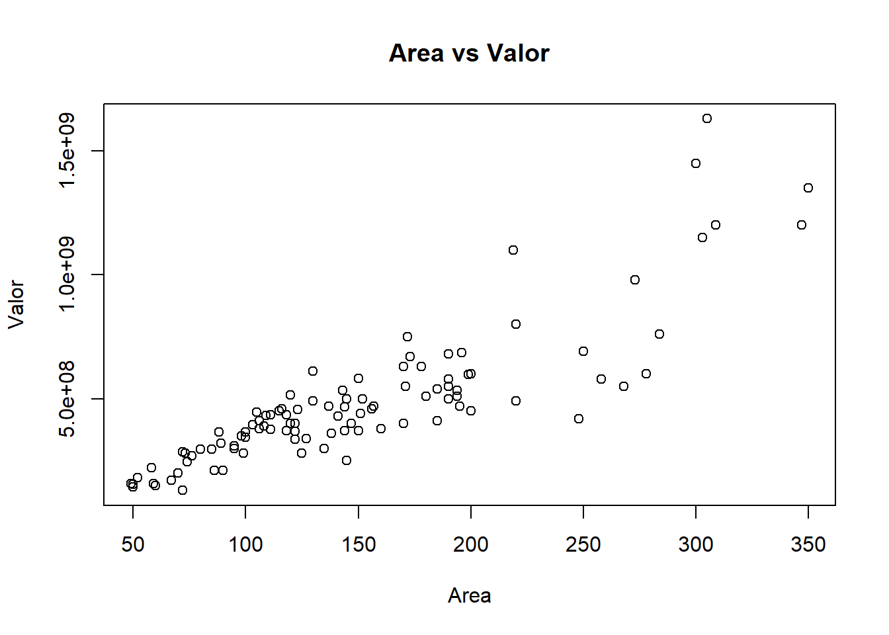

REGRESION
Regresión lineal simple
Para ilustrar este caso se usará una base de datos de apartamentos en el Poblado-Medellín.
En un principio veamos un resumen de la base de datos.
| valor | area | |
|---|---|---|
| Min. :1.300e+08 | Min. : 49.0 | |
| 1st Qu.:3.350e+08 | 1st Qu.:100.0 | |
| Median :4.350e+08 | Median :138.0 | |
| Mean :4.855e+08 | Mean :150.5 | |
| 3rd Qu.:5.500e+08 | 3rd Qu.:190.0 | |
| Max. :1.630e+09 | Max. :350.0 |

correlación
| valor | area | |
|---|---|---|
| valor | 1.0000000 | 0.8599923 |
| area | 0.8599923 | 1.0000000 |
A continuación se muestran los resultados del ajuste del modelo lineal simple.
##
## Call:
## lm(formula = valor ~ area, data = regresion)
##
## Residuals:
## Min 1Q Median 3Q Max
## -397309920 -69525715 11622185 63152268 618679323
##
## Coefficients:
## Estimate Std. Error t value Pr(>|t|)
## (Intercept) -26807060 33644921 -0.797 0.427
## area 3403698 202988 16.768 <2e-16 ***
## ---
## Signif. codes: 0 '***' 0.001 '**' 0.01 '*' 0.05 '.' 0.1 ' ' 1
##
## Residual standard error: 141600000 on 99 degrees of freedom
## Multiple R-squared: 0.7396, Adjusted R-squared: 0.737
## F-statistic: 281.2 on 1 and 99 DF, p-value: < 2.2e-16
Ahora se verán los resultados obtenidos para valores predichos
| area | estimaciones |
|---|---|
| 1 | -23403362.8 |
| 8 | 422519.7 |
| 15 | 24248402.2 |
| 22 | 48074284.7 |
| 29 | 71900167.2 |
| 36 | 95726049.7 |
| 43 | 119551932.2 |
| 50 | 143377814.7 |
| 57 | 167203697.2 |
| 64 | 191029579.7 |
| 71 | 214855462.2 |
| 78 | 238681344.7 |
| 85 | 262507227.2 |
| 92 | 286333109.7 |
| 99 | 310158992.2 |
| 106 | 333984874.7 |
| 113 | 357810757.2 |
| 120 | 381636639.7 |
| 127 | 405462522.2 |
| 134 | 429288404.7 |
| 141 | 453114287.2 |
| 148 | 476940169.7 |
| 155 | 500766052.2 |
| 162 | 524591934.7 |
| 169 | 548417817.2 |
| 176 | 572243699.7 |
| 183 | 596069582.2 |
| 190 | 619895464.7 |
| 197 | 643721347.2 |
| 204 | 667547229.7 |
| 211 | 691373112.2 |
| 218 | 715198994.6 |
| 225 | 739024877.1 |
| 232 | 762850759.6 |
| 239 | 786676642.1 |
| 246 | 810502524.6 |
| 253 | 834328407.1 |
| 260 | 858154289.6 |
| 267 | 881980172.1 |
| 274 | 905806054.6 |
| 281 | 929631937.1 |
| 288 | 953457819.6 |
| 295 | 977283702.1 |
| 302 | 1001109584.6 |
| 309 | 1024935467.1 |
| 316 | 1048761349.6 |
| 323 | 1072587232.1 |
| 330 | 1096413114.6 |
| 337 | 1120238997.1 |
| 344 | 1144064879.6 |
| Los int | ervalos de confianza para este modelo se muestran a continuación |
| 2.5 % | 97.5 % | |
|---|---|---|
| (Intercept) | -93565883 | 39951762 |
| area | 3000925 | 3806470 |
### ANOVA
| Df | Sum Sq | Mean Sq | F value | Pr(>F) | |
|---|---|---|---|---|---|
| area | 1 | 5.633806e+18 | 5.633806e+18 | 281.1649 | 0 |
| Residuals | 99 | 1.983700e+18 | 2.003737e+16 | NA | NA |
Diagnostico del modelo